01
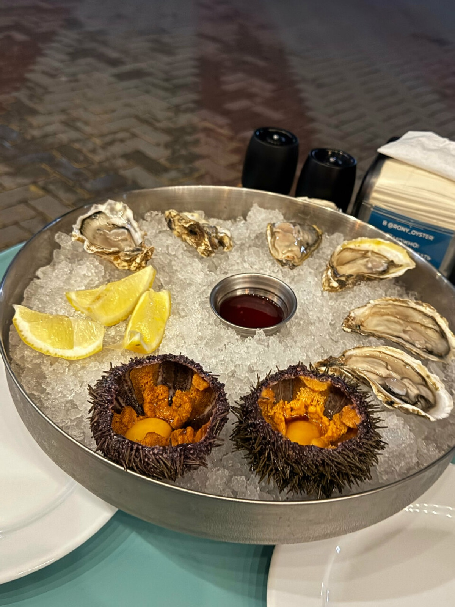
Устрицы и ежи
Плато на колотом льду: устрицы, морские ежи, лимон и мини-соусы.
пара — брют от сомелье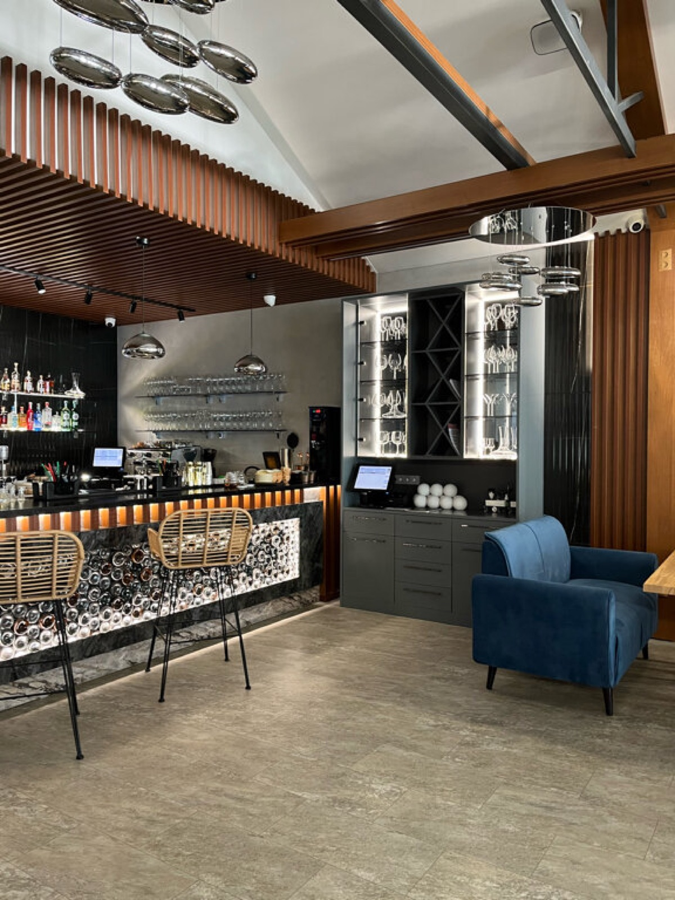
Винный дом в белом павильоне парка у самой набережной: устрицы и морские ежи, авторские подачи и бокал, подобранный к каждому блюду.
Velvet — это ужин, собранный вокруг бокала. Стены из бутылок, утренние морепродукты и парк за окном, в котором слышно море.

Плато на колотом льду: устрицы, морские ежи, лимон и мини-соусы.
пара — брют от сомелье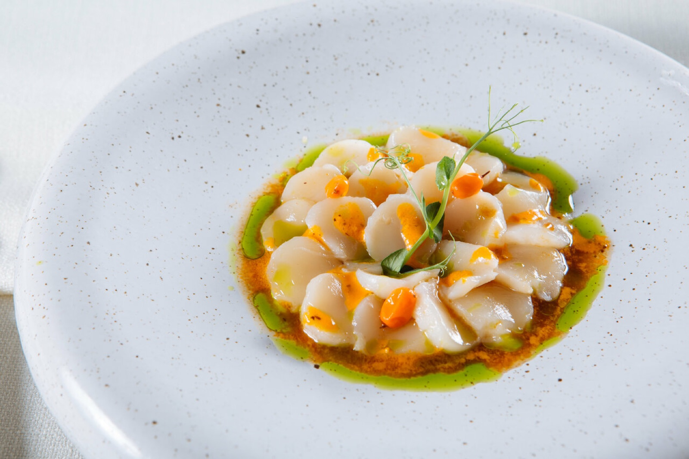
Нежные гребешки в авторской высокой подаче — визитная карточка кухни.
пара — белое сухое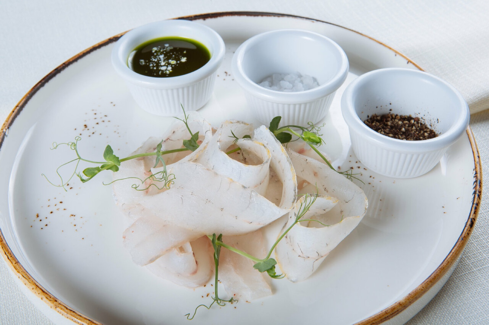
Севиче из свежей рыбы с тремя соусами — цитрус, свежесть, характер.
пара — молодое игристое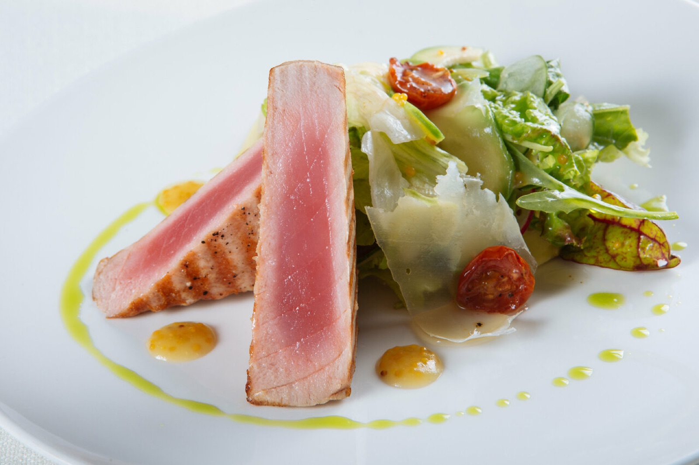
Обожжённый снаружи, бархатный внутри — тот случай, когда степень прожарки решает всё.
пара — лёгкое красное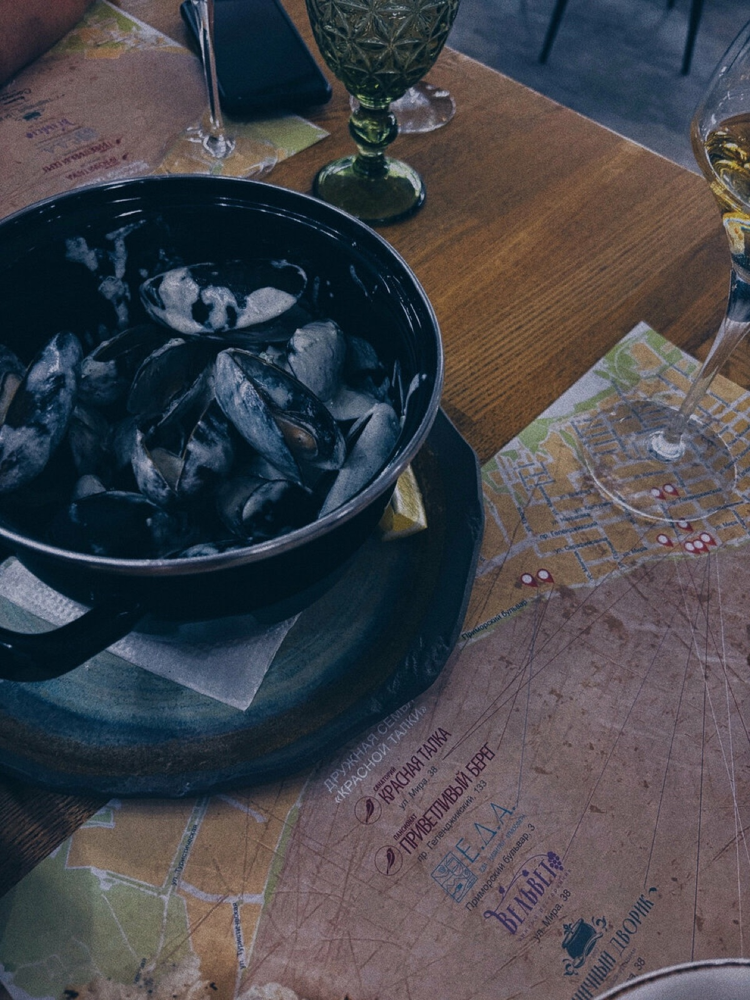
В чёрной кастрюле, в пряном бульоне — с хлебом, чтобы собрать всё до капли.
пара — сухое розе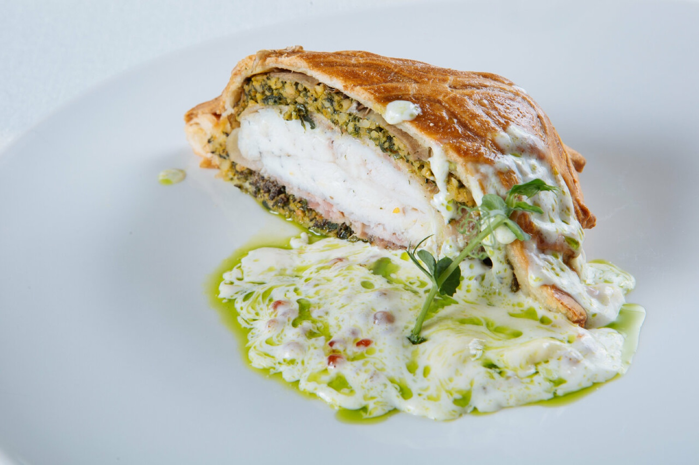
Авторская подача: рыба, запечённая в золотистом тесте, — режем у стола.
пара — выдержанное белое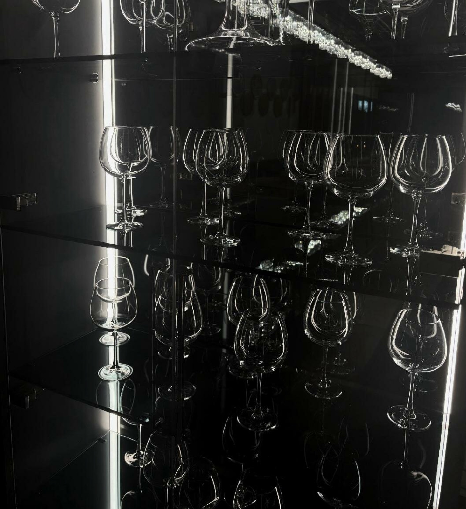
Винотека — сердце Velvet: полки с бутылками вдоль стен, бокалы над баром и карта, которую сомелье собирает под кухню, а не наоборот. Скажите, что заказали, — и к блюду приедет правильный бокал.

Медали винных конкурсов висят у нас прямо на стене — как напоминание, что к вину здесь относятся всерьёз.
коллекция винотеки Velvet

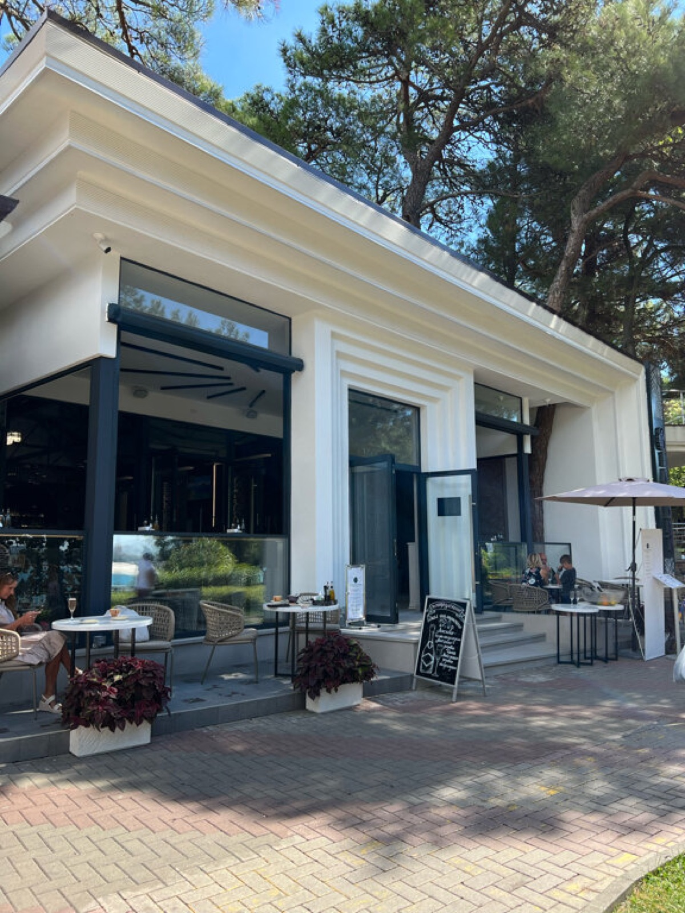
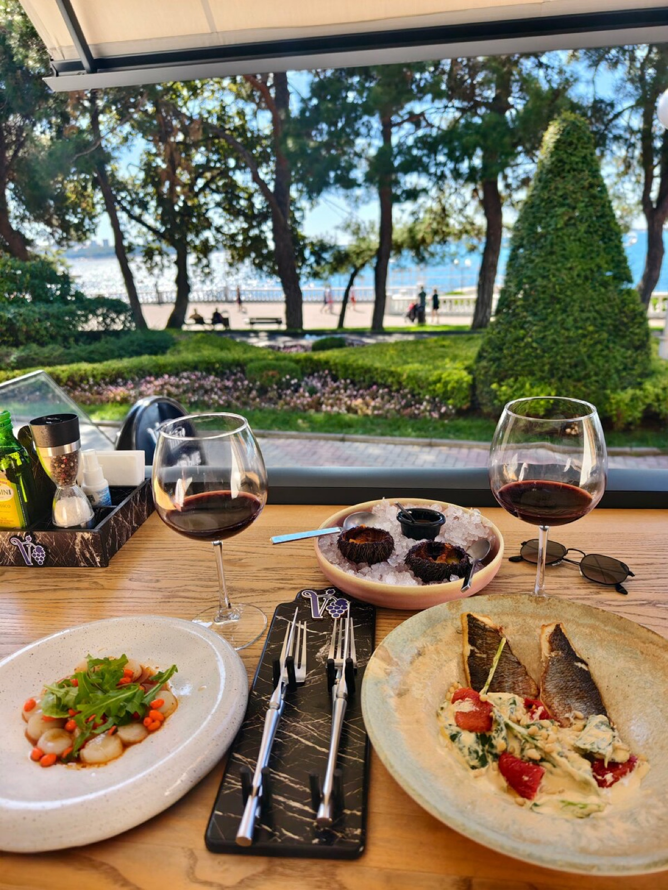
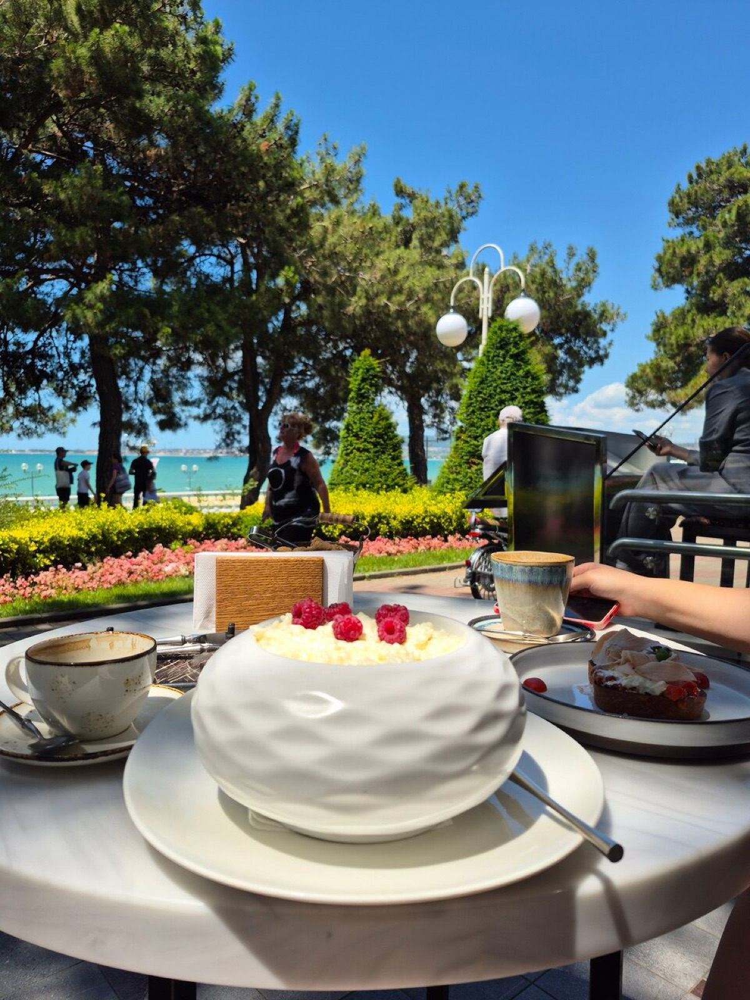
«Пять минут от набережной — и вы уже в другом ритме: парк, бархатный полумрак и бокал, который никуда не торопит».
настроение VelvetЗабронируйте заранее: вечера в винотеке и терраса в парке расходятся первыми.
Геленджик, ул. Шмидта, 1 · белый павильон в парке у набережной